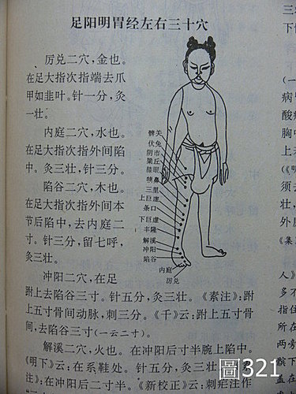
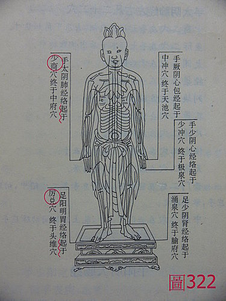
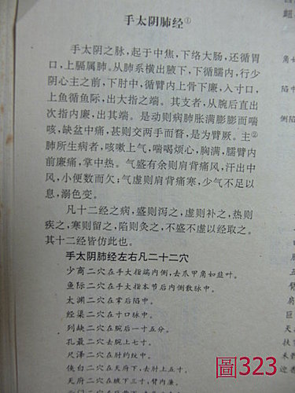

基礎概論 73：中醫與神通、相術、修道內證、氣功感應之間的問題（2）
作者：陳建元
上接基礎概論 72：中醫與神通、相術、修道內證、氣功感應之間的問題（1）
【或問：最近有看到幾本講〝內證〞的書，聽說作者吃了各種藥物後，然後去觀察體內的氣是以圓球或太極球的型態來移動的，據以證實中醫不是一種物質，而是一種氣？】
答：
其實這沒有什麼，現在才開始提出觀內證，早已落後台灣20多年以上矣！蓋台灣20餘年前，早就流行過一大陣子〝啟靈學〞了，當時學費都是30～40萬元起跳的，學的人不乏博士、教授，又何止觀內證看到圓球和太極圖而已？那時候的觀內證花樣，比現在還豐富許多，第一關是看到體內有經絡，有圓球和太極圖，第二關是看到有一個〝八卦〞在體內（故知八卦乃伏羲觀內證所畫），第三關是看到有一個〝法船〞，乃諸天願力所聚，可以度化任何人和動物，第四關是看到有一柄〝法劍〞，是十方世界正氣所聚成，可以斬任何妖魔，第五關是看到有一個摩尼寶珠，是諸佛所授的印記，憑此可超三界外，不在五行內，也有看到金鷹在盤旋者，則是諸天護法來了，繪聲繪影，講得好像真的一樣，‥‥‥，每關請繳錢20萬。結果咧？那陣子精神病院多了許多人，蓋打開天靈蓋，引入外靈邪靈附身，走火入魔，本來好好的一個萬物之靈，腦筋短路，變成不靈矣！
又有服小青龍湯者，內觀說有一條青龍從東方而來，病遂痊癒，故知仲景為大聖人，蓋小青龍湯之配伍，可引東方青龍吐氣，故知中醫的治病原理和奧秘，不是在於物質，而是在於能感召諸天之氣而癒病；又有服白虎湯者，內觀西方有一隻白虎前來，大驚，懷疑為何前來的不是武松打虎裡面的那隻吊睛中國黃虎？而是白虎？又有一通靈好事者答曰：仲景住家北方，曾出使俄羅斯，沙皇贈一外國品種白虎，遂圈養自家後院，此白虎湯之由來，遂大釋其疑而歎服。‥‥‥所以這種東西就是畫鬼最易，隨他怎麼掰怎麼編故事，你也死無對證。
【商業上的需要，各種行業一起進來渲染】
為什麼中醫裡面會有種種奇奇怪怪的渲染？這是因為商業上的需要，所以避不掉，古代有五術（山、醫、命、卜、相）同一家的說法，練武術學拳頭的，要不要說他兼懂中醫？要啊，不說懂的話，別的拳師都說他們兼懂，你就矮一截了；教氣功的要不要說他兼懂中醫？要啊，不說懂的話，別的教氣功的都說他們兼懂，你就矮一截了；算命的要不要說他兼懂中醫？要啊，不說懂的話，別的算命的都說他們兼懂，你就矮一截了；卜卦的要不要說他兼懂中醫？要啊，不說懂的話，別的卜卦的都說他們兼懂，你就矮一截了；看相的要不要說他兼懂中醫？要啊，不說懂的話，別的看相的都說他們兼懂，你就矮一截了；再加上養生大師要不要說他兼懂中醫？要啊，不說懂的話， 別的養生大師都說他們兼懂，你就矮一截了；國術館的要不要說他兼懂中醫？要啊，不說懂的話，別的國術館的都說他們兼懂，你就矮一截了‥‥‥，甚至很多佛、 道的宗教家、哲學家，要不要說他兼懂中醫？要啊，不說懂的話，別的佛、道的宗教家、哲學家都說他們兼懂一些，你就矮一截了，‥‥‥，此外按摩的、賣健康食 品的、做直銷的、做美容的、賣保險的、食品家、中國文化工作者、甚至賣藥膳賣青草茶的，也說要說自己略懂中醫，更能吸引客戶，在這種輸人不輸陣的觀念下，大家都想去借那個背光效果來顯示自己博學多聞，當然就容易誇大、渲染而瞎說。
【指頭上的功夫，一層還有一層高，仲景、歷代醫家早已望塵莫及自嘆弗如，也比一燈大師的一陽指和段譽的六脈神劍還厲害許多】
說到這指頭上的把脈功夫，其實是一層還有一層高的，譬如仲景、歷代醫家這些人在兩千年來都是一樣的，他們把一個脈，每部候50下心跳，六部總候300心跳，扣除掉有些脈位是空的可快速偵察過去，一般也要把脈2～4分鐘，才能明瞭病情。（參看脈理醫理學 29.1：把脈基準）
但因為還不夠強，近年來流行氣功熱，某些大師開始提出全息感應脈法，手指只要一碰到患者的皮膚，就會全自動的感應而跳出答案，故把脈都不到30秒。
但還是有點落伍，幾年後，某大師在台灣傳授一種叫○○氣功的，這次不但可以自動感應偵測，聽說手指還可以自動去感應到患者適合吃哪一瓶藥，會自動去櫃臺拿來給患者吃，很顯然的，這次又比上面高了一層。
但上面其實沒什麼，又幾年後，又有○○大師在傳授一種叫╳╳氣功的，而且頗具規模，還有全省的分會，這次總算有考慮到前面一直沒有考慮到的藥劑費問題，所以這一次不但可以隔空感應，還可以隔空治療，連藥劑費都省下來了，而且左右手還可以〝質能互換〞的自由變大變小，並上電視台表演，偉哉！這次已經達到了愛因斯坦的〝原子彈〞境界了。
但其實還不是最厲害的，因為畢竟還無法超越時空，還有一種叫○○功的，可能是目前最強的，聽說只要你拜他為師，就是你人在月球上出狀況，老師也可以分身去救你，而車禍時西醫釘在你腿骨上的鋼釘，也不用麻煩西醫動手術再取出來，老師可以憑空讓鋼釘消失掉，這不但超越了前面〝原子彈、質能互換〞的境界，更達到了 〝超越時空〞的境界，成為宇宙中的神。
所以說指頭上的功夫，一層還有一層高，仲景、歷代醫家早已望塵莫及自嘆弗如，也比一燈大師的一陽指和段譽的六脈神劍還厲害許多，既然如此，一個比一個還厲害，自行創造就好了，又何必回頭過來閱讀歷代經典學中醫呢？
【熟悉經絡的歷史發展經過和道家內外丹的演變，則不會被迷惑】



近代很多養生大師或氣功大師，很喜歡拿〝經絡〞做文章，或是說看到〝內氣〞在12經絡中運行，或是說伏羲等人熟悉道家丹術內證，於是畫下了經絡圖云云，繪聲繪影，好似學中醫就是要學道家在那邊靜坐，等到有一天內證看到了〝內氣〞在12經絡中循經運行，然後就會明白人體的生理，然後醫術就會大進，事實上，這種說法是不正確的，若能熟悉中醫經絡的歷史發展經過和道家內丹外的演變和其目的，自然不會被這些奇怪的說法所迷惑。
經絡發展的經過：
目前我們所通用的國際12經絡圖（或加任督二脈成14經絡圖），並不是由內證或內丹術而來的，而是由無到有、由少到多、由簡單到系統、由歷代醫家修改而來的，這些都是有紀錄的，從早期的馬王堆漢墓的《帛書炙經》、張家山出土的漢簡《脈書》，都是比較簡單的型態，或是記載10脈或是11脈，只有經脈沒有兪穴，經脈之間沒有連線，而且大都是向心型態排列的。內經時發展到一個高峰，《素問‧刺熱篇》記載10脈，《靈樞‧本輸》記載11脈，到了《靈樞‧經脈》，才記載了12脈，內經中的經絡有兩種，一種是經絡在人體〝內部的循行路線〞，因為中醫設定了五臟六腑為中心，這些經絡在人體內部的循行路線，其實是用來說明一脈多葉的概念（第 56.2 條）， 也就是主要的目的，是用來說明每個臟器，可藉由經脈的聯繫，來管轄到相配套的遠隔的臟腑、外部的器官肢節、脾肉筋骨等地方，經由經絡的聯繫，可使人體能夠保持一個內外相關而互相聯繫的整個，而且能夠說明為何吃了歸入肺系的藥物，能使與肺遠隔的鼻子的流鼻水得到改善，而這種概念，其實是由觀察得來的，譬如外感時，發現肺脈有異樣，而鼻子會流鼻水、鼻塞，自然聯想到肺與鼻有關聯性，故有鼻為肺之外候的說法，而另一方面又由於吃了肺系的麻黃桂枝等藥，而流鼻水得到了改善，更肯定鼻為肺之外候，而想像中間必有一條經絡相連結著，才能得到這種結果；又譬如挨餓的時候，四肢無力癱軟，自然想到脾胃主四肢的想法，而經由吃飯，四肢又有力了，證明脾主四肢，而脾與四肢之間，則想像必然有一條經絡互相聯繫著，故能得到這種結果，所有的醫學，都是起源於觀察、實驗和統計得來的。
另外一種經絡是〝經穴圖〞，也就是針灸實際在用的孔穴位置，它們的分佈，並不是像現代12經絡圖一樣，把12正經連接起來成一個環，而是12經各自分散的，經與經之間並沒有連線，12經的起頭，都是由手腳的末端開始的，然後都是由手腳的末端向心性排列的（即向心臟的方向）【註：此種排列法，符合內經中標本根結的概念，也符合臨床現象，即以手足肘膝以下的穴位最為重點，為本為根（註：手足肘膝以下的穴位，遠道治療的效果最相對性的突出）】，身體頭面部位的經絡則分段敘述，而不管手腳或是身體部位，穴與穴之間都沒有連線，經與經之間也沒有連線，這種排列法，從《內經》、《甲乙經》、《千金方》、《千金翼方》、‥‥‥，一脈下來千餘年到《銅人兪穴針灸圖經‧宋‧王惟一‧西元1026年‧製造著名的天聖銅人‧圖322、323 》、《資生經‧圖321》，都一律是用這種針灸圖。兪穴的歸經工作是一個十分漫長的演變過程（即古人在漫長的時間裡，這邊刺刺那邊刺刺，發現這個穴有什麼功用，那個穴有什麼功用，於是就把這些統合起來，歸入五臟六府的系統中），到王惟一時，基本上才完成了全面性的穴位歸經，然後，又搭在這個基礎上，經絡圖在元代經歷了一次大變革，滑壽以忽泰的《金蘭循經取穴圖解》為底本，補註改編成《十四經發揮》一書，書中把〝經穴圖〞和〝內部的循行路線〞合而為一，改變了歷代以來傳統的一律依井、滎、俞、經、合的向心性排列，而變成經絡走向有的向心，有的離心的情況，並且把各經穴、經與經之間用線連接起來，我們目前國際通用的經絡圖，就是這一種【註：但其中的某些經穴歸經或經絡路徑，還是有爭議性的，尤其以太陽膀胱經和足少陽膽經的爭議性最大，明清一大票的針灸醫家，並不認同這種人為連線所造成的經絡線的許多銳角、急轉彎，因為這不論在古代的觀察，或是用諸多現代儀器來探求，經絡現象的感傳線，都不可能走出這種銳角或急轉彎的樣式。（按：經絡線是由經穴連成的，但某些穴除了治療某一經系的病症之外，在實驗中，發現還可以治療旁系的病症，於是這穴位的歸經，就會成問題，有的醫家認為要歸東，有的醫家認為要歸西，所歸入的經絡不一樣，連起來的經絡圖就不一樣）】，由上可知，證據很明確，經絡圖是由歷代醫家經由觀察和實驗，把概念逐漸整合修整而來的，並非某一道家高人在內證或內丹術中突然發現的。
道家內丹外的演變：
道家的內外丹，起源都很早，但是外丹的發展比內丹快很多，這是因為得到了歷代帝王的贊助，所以發展極為迅速，所謂的外丹，就是用鉛、硃砂、金、硫磺‥‥‥，這類東西下去煉，希望造出一種長生不老藥，結果漢武帝被術士騙，後來才後悔，秦始皇雖沒吃，卻派人出海尋找長生不老藥，唐朝24位皇帝中，服外丹中毒早逝的有6位，明代有5位，服丹長生的幻想則逐漸破滅，清代只有雍正一位中毒身亡。內丹（大陸在1960年後，把內丹、守一、導引、養氣、胎息‥‥‥，這類有內養特點的，一律改成〝氣功〞為統稱） 的書早期不多，晉的《黃庭經》、隋唐的《旨道篇》、《龍虎金液還丹通元論》，內丹術的興起是因為外丹術的逐漸破滅，因為興起較晚，所以內丹術的一些術語，大都是從外丹術中借來的，譬如：藥物、鼎爐、火候，藥物是指精氣神三寶，以精為基礎，鼎在頭部百會，爐在腹部丹田，火候即煉丹者的意念運用。
隋唐之後五代時期的呂洞賓、鍾漢離（或稱漢鍾離、鍾離權），可為內丹流派之祖師，對內丹的興起有著重大之貢獻，宋元時代之100著名內丹家，幾乎都是子弟兵。呂洞賓的《敲爻歌》、崔嘉彥的《入藥鏡》、張伯瑞的《悟真篇》、施肩吾的《西山群仙會真記》、張無夢的《還元詩》、孫汝忠的《金丹五百字》、張三丰的《無根樹》、白玉蟾的《海瓊傳道集》、王重陽的《重陽全真集》《教化集》、邱處機的《攝生消息論》《大丹直指》、孫不二的《不二元君法語》和《靈寶篇》、《鍾呂傳道集》、《百問篇》、《肘後三成篇》、《修真指玄篇》等，都是道家重要典籍。
內丹的理論，是由老子的： 道生一，一生二，二生三，三生萬物的概念上衍化出來的，順著走是萬物的規律，故要回歸原始的話，就要逆著回去，先使萬物合而為三（即精、氣、神），再逆回去二（內丹的前身），再逆回去一（即結成內丹），順行則死，逆行則長壽，可以重返本源而延長壽命，也即練養內丹的過程是：築基→→練精化氣→→練氣化神 →→煉神還虛。
下接基礎概論 74：中醫與神通、相術、修道內證、氣功感應之間的問題（3）
【引用請先來信告知徵求同意，若有涉及販售營利等商業行為，版權所有拷貝盜用必究。】
【藥王脈學講壇】http://blog.xuite.net/drjychen/twblog